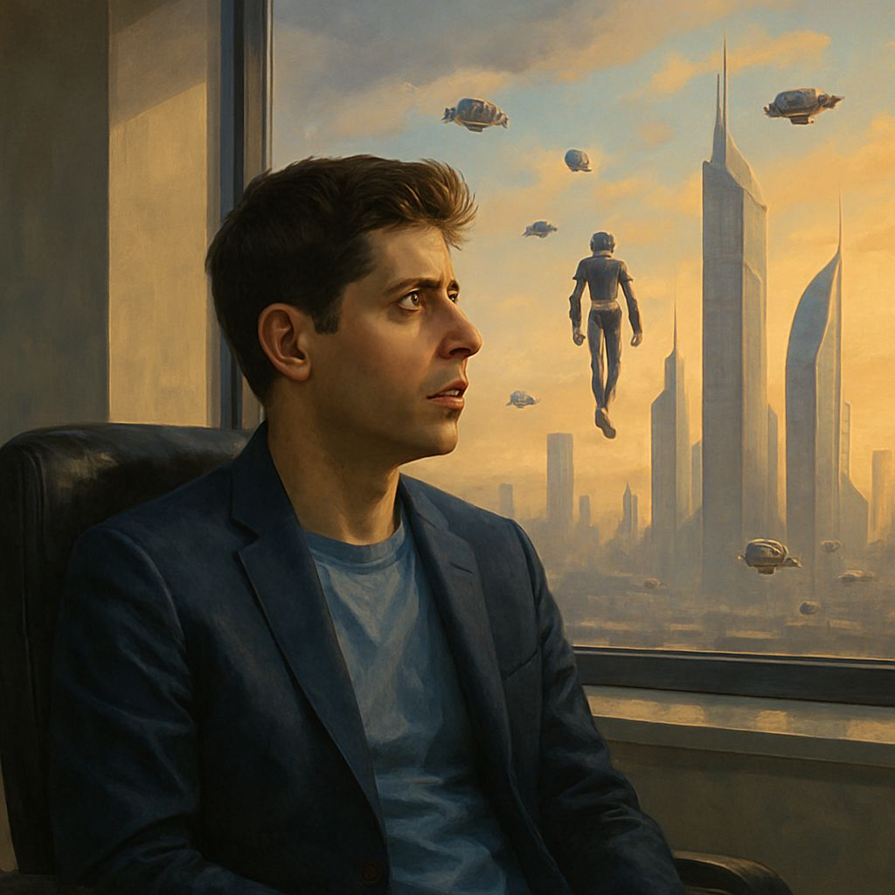

רובוטים עוד לא ברחובות, ועדיין לא פתרנו את הסרטן או את המסע לחלל, אבל אם תשאלו את סם אלטמן (מנכ״ל Open AI) - עברנו את קו האופק.
פורסם במקור ב LinkedIn
רובוטים עוד לא ברחובות, ועדיין לא פתרנו את הסרטן או את המסע לחלל, אבל אם תשאלו את סם אלטמן (מנכ״ל Open AI) - עברנו את קו האופק.
הבינה המלאכותית כבר משנה את העולם, ועד 2030 השינוי יהפוך לבלתי נתפס. במובנים מסויימים הכל יהיה אותו דבר, במובנים מסויימים נחיה בעולם חדש שאנחנו עדיין לא מכירים.
סם אלטמן משתף חזון נדיר על העתיד הקרוב והרחוק של האנושות. מתוך הבלוג שלו:
רובוטים עוד לא מסתובבים ברחובות, עדיין לא פתרנו מחלות, ואנחנו עדיין לא מבינים הרבה מהיקום. אבל יש לנו מערכות חכמות יותר מבני אדם במובנים רבים, שמעצימות את היכולות האנושיות בצורה דרמטית.
החלק הקשה - הפריצות המדעיות שהובילו ל-GPT-4 ו-o3 - כבר מאחורינו.
AI תאיץ את ההתקדמות המדעית והפרודוקטיביות האנושית.
ChatGPT כבר חזקה מכל אדם שחי אי פעם, עם השפעה אדירה עלינו - הן חיובית והן שלילית.
2025 היא שנת הופעתם של סוכנים בעלי יכולות קוגניטיביות.
2026 תביא תובנות חדשות.
2027 עשויה להביא רובוטים לעולם האמיתי.
הרבה יותר אנשים יוכלו לייצר תוכנה ואמנות. העולם רוצה עוד משניהם. אבל המומחים עדיין יהיו טובים יותר, אם יאמצו את הכלים החדשים. אדם ב-2030 יוכל לעשות הרבה יותר מב-2020 - והשינוי הזה יהיה דרמטי.
בשנות ה־30, נמשיך לאהוב, ליצור ולשחק - אך גם נחיה בתקופה שבה אינטליגנציה ואנרגיה יהיו שופעות. אלה היו מגבלות ההתקדמות האנושית - ופתרונן משנה את חוקי המשחק.
המהירות שבה פלאים הופכים לשגרה מדהימה - מדענים מדווחים על הכפלת או שילוש קצב העבודה, וכש-AI עוזרת לפתח AI - ההאצה רק מתחילה.
הייצור כבר הופך לאוטומטי. מרכזי נתונים נבנים על ידי מכונות. רובוטים שיבנו רובוטים - לא רחוקים. העלות של אינטליגנציה תלך ותתקרב לעלות החשמל.
כן, מקצועות ייעלמו. אבל העולם יתעשר מספיק כדי לאמץ רעיונות מדיניות חדשים. לא נחליף את הסדר החברתי ביום, אבל נביט לאחור בעוד עשורים ונראה שינוי עצום.
כמו אחרי המהפכה התעשייתית - נגלה עיסוקים חדשים ורצונות חדשים. היכולות יגדלו יחד עם הציפיות. אנשים, בניגוד ל-AI, באמת אכפת להם מאנשים אחרים - וזה יתרון שלא ייעלם.
כדי למקסם את הרווחים ולמזער את הסיכונים, נצטרך לפתור את בעיית היישור - לוודא שהמערכות לומדות לפעול בהתאם למה שאנחנו באמת רוצים, לא רק למה שמגרה אותנו בטווח הקצר.
איכר מלפני אלף שנה היה חושב שהעבודות שלנו מזויפות לגמרי. אני מקווה שכך נחשוב גם על עבודות העתיד, ושהן ירגישו משמעותיות לאנשים שיעשו אותן.
המטרה הבאה - להפוך את הסופר־אינטליגנציה לזולה, נגישה ולא מרוכזת בידי מעטים.
OpenAI היא הרבה דברים, אבל קודם כול - חברת מחקר אינטליגנציית על. יש לנו עוד המון עבודה, אבל הדרך מוארת, והחושך מפנה את מקומו.
אנחנו אסירי תודה על ההזדמנות הזו.
הלוואי שנגדל - בצורה חלקה, אקספוננציאלית, וללא תקלות - אל תוך עידן הסופר-אינטליגנציה.
בסופו של דבר, אלטמן כותב: "אנחנו בונים מוח עולמי, מותאם אישית, שקל לכולם להשתמש בו.״
אם היו מספרים לנו ב־2020 איפה נהיה ב־2025 - זה היה נשמע מופרך.
התחזיות להמשך - כנראה פחות.
